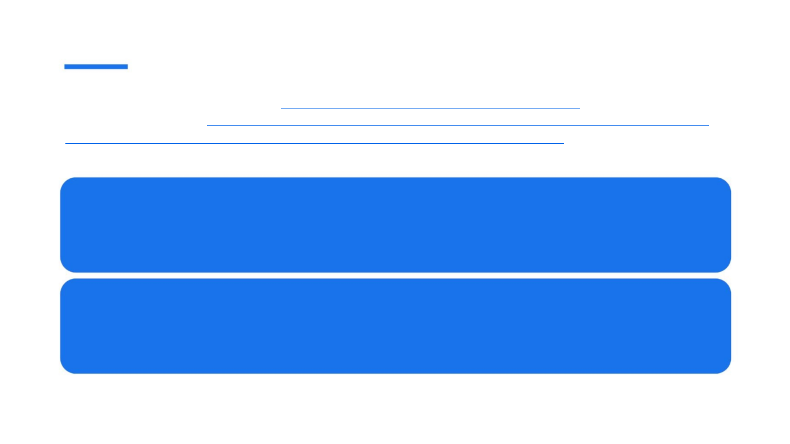

Past Perfect Continuous tense - (прошедшее совершенное длительное время) в английском языке
нужно для описания событий, которые начались и продолжались до определенного момента в
прошлом, либо находятся в процессе в определенный момент в прошлом.
I had been looking for my phone for half an hour until I realised it
was in my pocket. — Я полчаса искал свой телефон, пока не
понял, что он у меня в кармане.
Ben had been saving money since graduation because he wanted
to retire early. — Бен откладывал деньги с тех пор, как окончил
институт, потому что хотел пораньше уйти на пенсию.
2 / 1 9 / 2 0 2 5 7